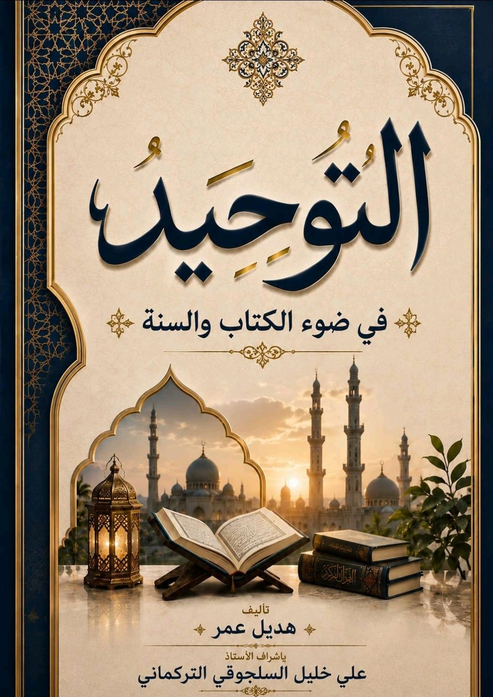
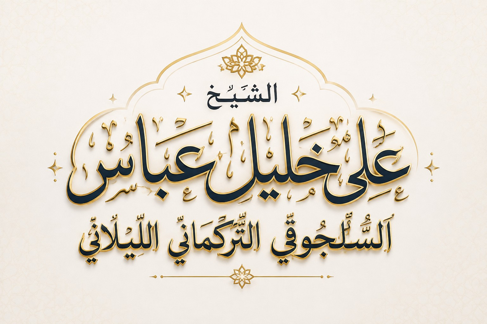

التوحيد
في ضوء الكتاب والسنة
تأليف: هديل عمر
بإشراف الأستاذ: علي خليل السلجوقي التركماني
بإشراف الأستاذ: علي خليل السلجوقي التركماني


مِنَ التَّدَبُّرِ وَشُرُوحِ الْحَدِيثِ، إِلَى الْفِقْهِ وَأُصُولِهِ، وَنَقْدِ الْوَاقِعِ وَالسِّيَاسَةِ الشَّرْعِيَّةِ، وَالرَّقَائِقِ وَالطِّبِّ النَّبَوِيِّ وَتَعْبِيرِ الرُّؤَى.
باحِثٌ مَوسوعيٌّ أفنى قَلَمَهُ في خِدمةِ كتابِ اللهِ العزيزِ وسُنّةِ نبيِّهِ ﷺ؛ يَجولُ بينَ التَّدبُّرِ والفِقهِ وأصولِهِ، ونقدِ الواقعِ، والرَّقائقِ والحياةِ، بأسلوبٍ بَديعٍ يَجمَعُ عُمقَ العالِمِ وبَيانَ الأديبِ. فمَرحبًا بكم في رِحابِ فِكرِهِ ومَعارِفِهِ.

كتابٌ يجمع لطائف وفوائد نادرة في تفسير آياتٍ مختارة من كتاب الله عزّ وجلّ، بأسلوب الشيخ التدبري المعروف الذي يجمع بين عمق العلم وجمال البيان.
قراءة الكتاب على تليجرام
موسوعة تفسيرية موسّعة تجمع دُرَراً مستخلَصة من ظلال القرآن الكريم، مرتَّبة على أجزاء بحسب السور، بأسلوب الشيخ التدبري المعروف.
تصفّح أجزاء الموسوعة
أربعُ بوّاباتٍ كبرى، تنبثقُ من كلٍّ منها فروعُها. اضغط البوّابةَ لتُفتَح.
التفسير والتدبر · شروح الحديث · القصص القرآني والنبوي
الأحكام والفتاوى · فقه النوازل · أصول الفقه والقواعد الكبرى
السياسة والاقتصاد · المقالات التهكمية · المناظرات والردود
الرقائق والسلوك · الطب النبوي والتداوي · تعبير الرؤى والأحلام
لِلْمُلَاحَظَاتِ وَالِاقْتِرَاحَاتِ وَالِاسْتِفْسَارَاتِ حَوْلَ الْمَوْسُوعَةِ